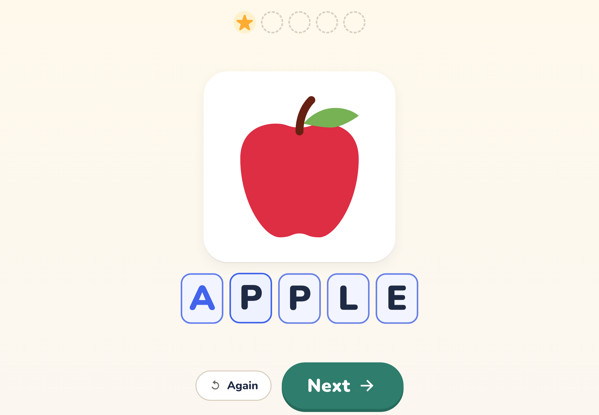
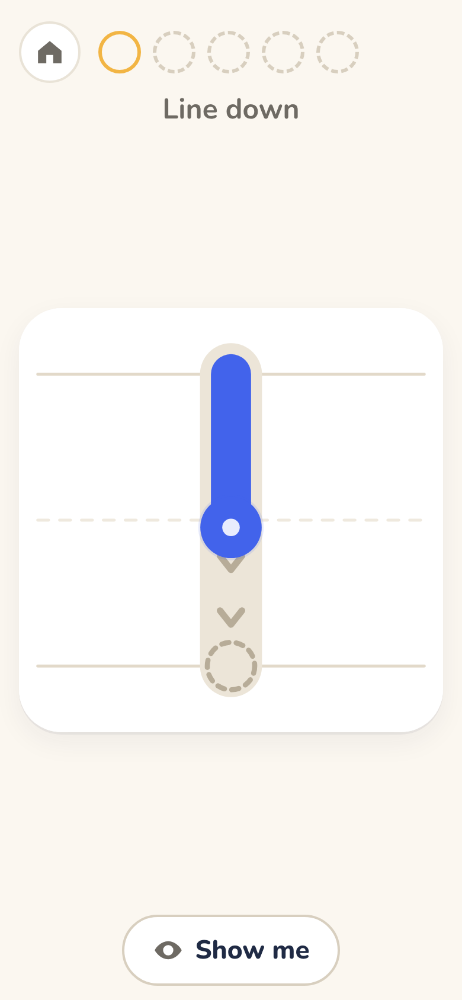
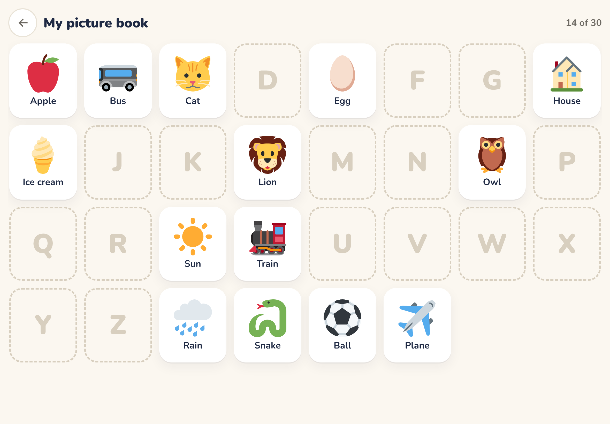

Write a letter.
See a picture.
A calm, reward-based writing app for a 4-year-old autistic learner who loves pictures.
November 2026 · Use ← → keys, click or swipe


The brief
Teach writing the way he already likes to learn: with pictures
Who it is for
A 4-year-old autistic boy at the very start of writing. He loves images, so pictures are what motivate him.
What was asked
A reward-based app. Each time he succeeds, show him one image with its spelling.
What success looks like
He traces letters on his own, carries them over to pencil and paper, and asks to play.
One turn, in one line

Trace the letter, then see and hear one picture and its spelling.
The core loop
One turn takes about a minute, and it is the same every time
 ›
›
See the plan
First write, then picture
Show me
A dot draws the stroke
Trace
Finger follows the path; the ink never goes wrong
One picture
"A is for Apple", then spelled out

A star
One more star in the row

All done
Today's pictures, then finish
Short: about a minute per turn and 3–8 turns per session, so it ends before attention runs out.
Predictable: the steps never change order, so he knows exactly what comes next.
Positive: there is no fail state anywhere in the loop, only "not yet".
Mock screen 1 of 5 · Start
Start: the plan, one button, nothing else
 1
2
3
4
1
2
3
4
- First → ThenShows the routine before it starts, like the visual schedules he may use at therapy or school.
- One big Start buttonStarts a short session of 3, 5 or 8 turns.
- Picture bookEvery picture he has earned, to look at any time.
- Grown-ups onlyPress and hold for 2 seconds. A quick tap does nothing, so he can't change settings by accident.
Mock screen 4 of 5 · Finish & collect
A clear ending, and a book of pictures to collect

All done. A clear finish helps with the move to the next activity. It shows only today's pictures, then one Finish button.

Picture book. 30 pictures to collect: A–Z plus 4 warm-up strokes. Tap one to hear its spelling again. Letters not yet earned wait as outlines.
Reward system
Small, immediate rewards built from what he loves
Every letter → 1 picture + its spelling
Within a second of finishing. About 5 seconds long, then back to the routine.
Every turn → 1 star
A row of 3, 5 or 8 stars shows how much is left. Stars are never taken away.
Every session → "All done"
Today's pictures, together. A calm ending, not a big party.

Over time → the picture book
Collecting all 30 is a goal he can see.
Make it his
Swap any built-in picture for your own photo and word. For example T → his toy train, D → our dog, M → Mum. Interest-based rewards are among the strongest motivators.
Never in the app
Losing stars, timers, scores, leaderboards, ads, purchases, pop-ups.
Watch for
If a picture over-excites or upsets him, swap it. If he rushes to the pictures, drop to 3 turns and keep the guide strong.